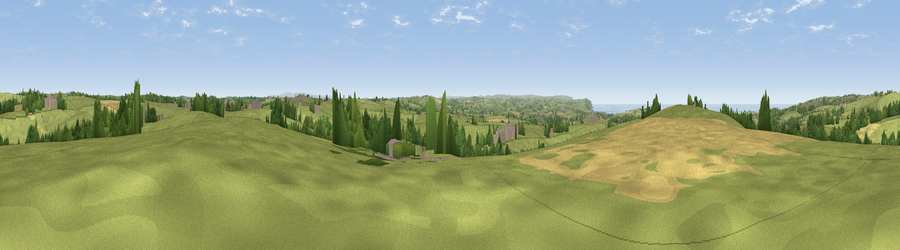

Viewpoint near Stratton
#15972 in England · top 34% of its area beats it · near StrattonWhere it is
The exact computed spot (SS 25175 04975). Click the marker for map links.
The view, rendered

A 360° render of this exact spot computed from the terrain model, tree cover and land cover — summer colours, afternoon light, calibrated against photographs of famous viewpoints. Real trees, hedges and buildings will differ in detail.
The panorama
Grey silhouette: terrain skyline in each direction (720 bearings, Earth curvature and refraction included). Dashed green: skyline with trees (+15 m) and buildings (+8 m) as obstacles. Blue strip: how far the ground is visible on each bearing.
Where the view opens
Wedge length = distance to the farthest visible ground on that bearing (vegetation-aware). Rings at 10, 25 and 50 km.
What fills the view
77% grassland · 11% cropland · 7% woodland · 3% water · 2% built-up
Angular shares of the visible panorama (visual magnitude), not map area. Landscape diversity 0.35 (0–1 Shannon).
Key numbers
More beautiful places nearby
The staircase of upgrades: each row has a higher view potential than everything closer. Driving times are estimates from straight-line distance, calibrated against real road routing — check an actual route before setting out.
| Place | Direction | Drive | Score |
|---|---|---|---|
| Viewpoint near Stratton | W · 1 km | ~2 min | 60.2 |
| Viewpoint near Bush | N · 2 km | ~5 min | 65.0 |
| Viewpoint near Poughill | NNW · 5 km | ~10 min | 73.3 |
| Viewpoint near Poughill | NW · 6 km | ~13 min | 74.0 |
| Viewpoint near Poundstock | SW · 8 km | ~16 min | 76.0 |
| Viewpoint near Poundstock | SW · 9 km | ~18 min | 79.7 |
| Viewpoint near Crackington Haven | SW · 10 km | ~20 min | 81.8 |
| Embury Beacon | NNW · 15 km | ~27 min | 83.8 |
50.81786, -4.48321 · source: screening · position refined by local search. Computed location — check access rights before visiting.